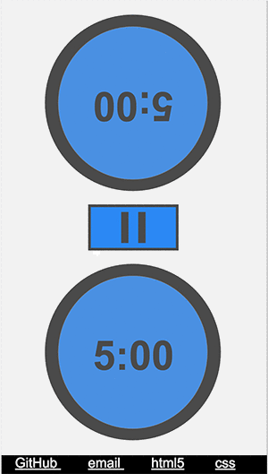
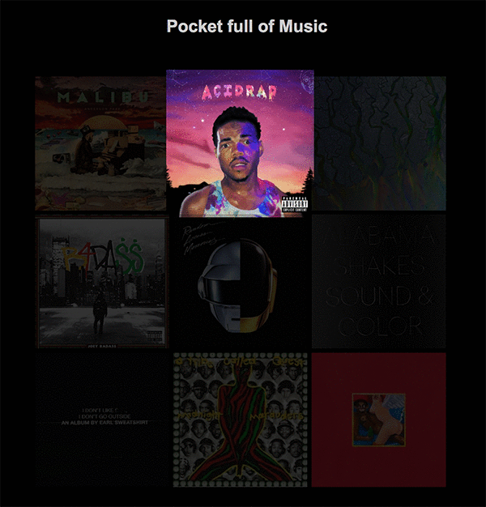
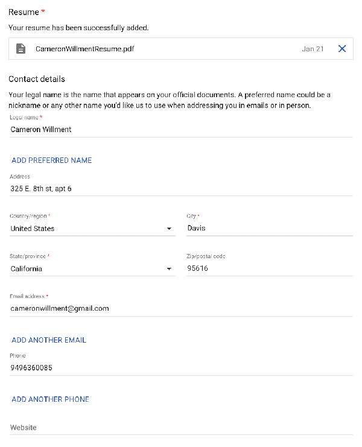
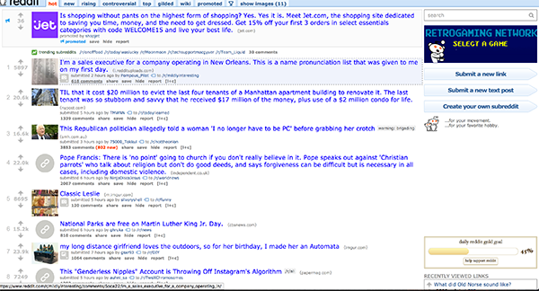

February 13th 2017
Chess Clock!
For my studio4 I decided to make a chess clock that was
designed for mobile use because I play speed chess and I like the idea
of having access to a chess clock from anyone's phone. I made a simple design
of two circles for the timers and a square pause button so that it stood out.
Once you press the pause it goes away and is replaced with two small circles for resuming
and restarting. I really like this design because it is simple and effective. What I think is
good as well is that the one timer is upside down so that the phone can be placed on a table
and the two players will see the clock appropriately. What can be improved is the addition of sounds
that click when the timers are hit, and a moving color wheel surrounding the clocks that goes from
green to red to indicate the player's time is running out.
my interface

February 7th 2017
Pocket full of music!
For my studio3 I decided to display my favorite albums. I have them
in my phone and therefore in my pocket at all times, and I figured
it would give a good insite as to who I am or at least what I enjoy.
I displayed them in a simple 3x3 matrix form and set the opacity down.
I made it so when you hover over each album it expands and resets opacity to
1 so it appears to jump out at you. I also made it so that when you click
on an album it flips over and gives you a breif description of the album or
what I enjoy about it. It also plays the song and then pauses when you click
it again to flip it back.
my interface

January 31st 2017
A Review of Google application form
I do not use mnay form websites in my life, but when applying
to jobs it defeinitley has come up a bit. It is probably the worst part of
applying to jobs in my opinion as it is so tedious and annoying. But when
applying to google I wasn't as pained. Their form was simple, clean and
most importantly smart. It would remember what you imputed for different jobs
and would adjust the form based on information you provided. It also
would not lose all your information when you lef the page which I thought
was great. I also like the look of it. Quite simple and clean.
Google Application Interface

January 16th 2017
A Review of Reddit's interface
Although not the prettiest and most modern of designs,
I am quite pleased with reddit’s interface. It is very simple
and get straight to the point--links. Basically just an endless list
of links. Reddit is a site where users post links to other sites and the
links get sorted by users so you are always seeing what everyone things
is best first. Just a short description of the link and a thumbnail
(if you have that setting on) is all you see at first.
Once you click on a link it takes you to a new view that is dominated by
comments. These comments are also sorted by popularity, which means you
see the best comments first. Whats different is that it allows for
conversations by not only sorting the original comments, but also all the
replies to those comments. So you also see the best reply, the best reply
to that, and so on. This system really allows for great conversations
not seen on other forums. Reddit’s interface is interesting because it
look quite daunting to new comers and I almost think that is on purpose.
It seems that users like to think of reddit as a community so by requiring
some time to acclimate to the interface, they are weeding out people that
are not as invested in the site.
Reddit's Interface
